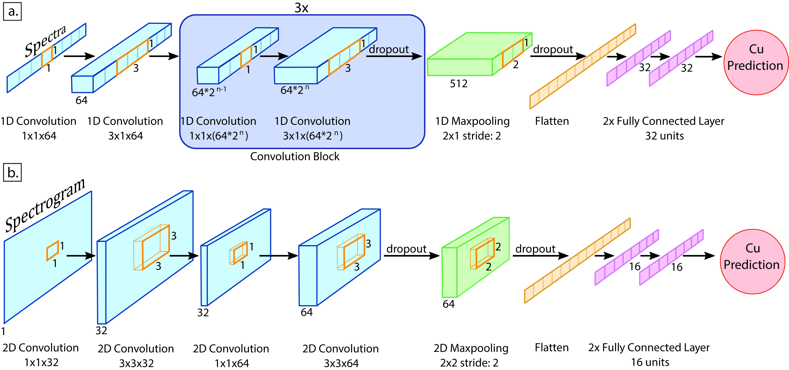

Ore-Grade Estimation from Hyperspectral Data Using Convolutional Neural Networks: A Case Study at the Olympic Dam Iron Oxide Copper-Gold Deposit, Australia

Resumo em Português
A obtenção de informações sobre a distribuição espacial do teor de minério em subsuperfície é essencial para a exploração e descoberta de recursos minerais. Essa informação é comumente derivada de análises geoquímicas realizadas em amostras de testemunhos de sondagem, que permitem a quantificação da concentração de elementos de interesse. No entanto, esses levantamentos são geralmente demorados e onerosos, resultando frequentemente em informações com baixa resolução espacial devido aos grandes intervalos de amostragem. O uso de sistemas hiperespectrais na indústria mineral para caracterizar e quantificar minerais em testemunhos de sondagem vem crescendo em razão de sua eficiência e rapidez.Neste trabalho, propomos o uso de redes neurais convolucionais em dados hiperespectrais para estimar a concentração de Cu em testemunhos de sondagem do depósito de óxido de ferro-cobre-ouro Olympic Dam. Os dados de concentração de Cu obtidos por análise geoquímica de testemunhos e os espectros médios dos intervalos analisados obtidos a partir de dados hiperespectrais foram utilizados para treinar o modelo de aprendizado de máquina. O modelo treinado foi então aplicado para estimar a concentração de Cu em um testemunho de teste não utilizado no treinamento, e também para extrapolar a concentração de Cu, em resolução espacial centimétrica, para os intervalos do testemunho sem análise geoquímica. As avaliações qualitativas e quantitativas dos resultados demonstram as capacidades do método proposto, que forneceu um erro quadrático médio (RMSE) de 0,48 para a estimativa do percentual de Cu ao longo dos testemunhos. Os resultados indicam que o método pode ser benéfico para determinar a distribuição espacial do teor de minério, apoiando a seleção de zonas de interesse para análises mais detalhadas, reduzindo o número de amostras necessárias para caracterizar e identificar zonas de minério, e auxiliando na estimativa do volume com minério comercialmente viável, potencialmente reduzindo os ensaios geoquímicos necessários e diminuindo o tempo de aquisição de dados.